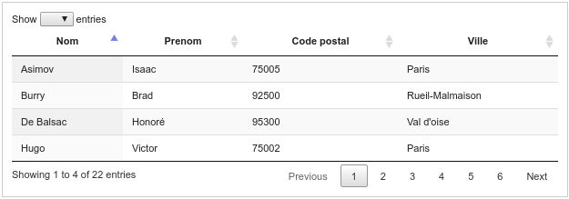

Télécharger le module : module Datatables
Présentation
Ce module est un module intégrable permettant d'afficher un tableau très riche dans votre application.Il s'appuie sur la librairie DataTables: https://www.datatables.net

Télécharger
Télécharger l'archive suivante :
normal.datatables1.0.1.zip Désarchivez dans le répertoire module de votre application.
Actualités
2016/06/19 : Correction de la liste des paginations et la limite par défaut.
2016/01/12 : PublicationPublication de la première version de ce module.
Utilisation
L'idée est de vous faciliter le developpemenet de tableau richeVous pouvez télécharger ce module, l'utiliser mais surtout ne pas hésiter à le personnaliser pour vos applications afin de pouvoir le réutiliser.
L'implémentation se déroule en plusieurs étapes:- 1. méthode principale construisant le tableau dans la page
- 2. appel ajax retournant les données sous un format json
- 3. les 4 méthodes à rédiger dans la classe modèle
1. Méthode principale: construction du tableau
Dans votre classe module, la méthode action, par exemple _list() d'un module "default"
public function _list(){
//instancier le module
$oTable=new module_datatables;
$oTable->setPaginationLimit(4);
//l'id de la div html
$oTable->setId('monId');
//on definit la hauteur du tableau (en pixels)
$oTable->setHeight(120);
$oTable->setWidth(600);
//la page permettant de retourner le contenu au format json
$oTable->setJsonLink('default::listJson');
//on defini (si besoin) un menu deroulant permettant de modifier la pagination
$oTable->setListLimit(array(10,20));
//definir le sens par defaut de tri (asc/desc)
$oTable->setDefaultSort('desc');
//defintion du tri par defaut
$oTable->setDefaultSortField('pkey');
$oTable->addColumn('Nom','firstname');
$oTable->addColumn('Prenom','lastname');
$oTable->addColumn('Code postal','zip');
$oTable->addColumn('Ville','city');
$oView= $oTable->build();
//assigner la vue retournee a votre layout
$this->oLayout->add('main',$oView);
}
2.Méthode ajax retournant les données sous le format json
Dans votre méthode listJson du même module
public function _listJson(){
$oJson=module_datatables::getJson();
//on precise la liste des champs autorise a etre trie
$oJson->setSortFieldAllowed(array('pkey','firstname','lastname','zip','city'));
//attention a bien mettre les colonnes avant de definir le total et les data
$oJson->addColumn('firstname');
$oJson->addColumn('lastname');
$oJson->addColumn('zip');
$oJson->addColumn('city');
if($oJson->hasFilter()){
$count = model_author::getInstance()->findTotalFiltered($oJson->getListFilter());
$oJson->setTotal($count);
$tData=model_author::getInstance()->findListFilteredAndLimitOrderBy($oJson->getListFilter(),$oJson->getStart(),$oJson->getLimit(),$oJson->getSortField(),$oJson->getSortSide());
}else{
$count = model_author::getInstance()->findTotal();
$oJson->setTotal($count);
$tData=model_author::getInstance()->findListLimitOrderBy($oJson->getStart(),$oJson->getLimit(),$oJson->getSortField(),$oJson->getSortSide());
}
$oJson->setData($tData);
$oJson->show();
}
Comme vous pouvez le voir ici, on appelle 4 méthodes de la couche modèle: la premiere comptant le nombre total d'enregistremetn, la seconde triant ou filtrant le résultat
Les 4 méthodes à ajouter coté couche modèle
Dans notre exemple, on appelle une classe modèle author, voici les 4 méthodes à ajouter, je donne ici
exemple sous MySql/MariaDb
//methode listant le nombre total d'enregistrements
public function findTotal(){
$oRow=$this->findOneSimple('SELECT count(*) as total FROM '.$this->sTable);
return $oRow->total;
}
//methode retournant les enregistrements trie et pagine
public function findListLimitOrderBy($start,$limit,$sField,$side){
return $this->findManySimple('SELECT * FROM '.$this->sTable.' ORDER BY '.$sField.' '.$side.' LIMIT '.$start.','.$limit);
}
//ici la meme chose incluant un filtre
//methode listant le nombre total d'enregistrements filtre
public function findTotalFiltered($tFilter){
foreach($tFilter as $sField => $sValue){
$tWhere[]=$sField.'=?';
$tValue[]=$sValue;
}
$oRow=$this->findOneSimple('SELECT count(*) as total FROM '.$this->sTable.' WHERE '.implode('AND',$tWhere).'',$tValue);
return $oRow->total;
}
//methode retournant les enregistrements trie et pagine et filtre
public function findListFilteredAndLimitOrderBy($tFilter,$start,$limit,$sField,$side){
foreach($tFilter as $sField => $sValue){
$tWhere[]=$sField.'=?';
$tValue[]=$sValue;
}
return $this->findManySimple('SELECT * FROM '.$this->sTable.' WHERE '.implode('AND',$tWhere).' ORDER BY '.$sField.' '.$side.' LIMIT '.$start.','.$limit,$tValue);
}
Même exemple pour SQL Server < 2012
//methode listant le nombre total d'enregistrements
public function findTotal(){
$oRow=$this->findOneSimple('SELECT count(*) as total FROM '.$this->sTable);
return $oRow->total;
}
//methode retournant les enregistrements trie et pagine
public function findListLimitOrderBy($start,$limit,$sField,$side){
return $this->findManySimple('SELECT * FROM
(
SELECT TOP '.($start+$limit).' *, ROW_NUMBER() OVER (ORDER BY (SELECT 1)) AS rnum
FROM '.$this->sTable.' ORDER BY '.$sField.' '.$side.'
) a
WHERE rnum > '.$start);
}
//ici la meme chose incluant un filtre
//methode listant le nombre total d'enregistrements filtre
public function findTotalFiltered($tFilter){
foreach($tFilter as $sField => $sValue){
$tWhere[]=$sField.'=?';
$tValue[]=$sValue;
}
$oRow=$this->findOneSimple('SELECT count(*) as total FROM '.$this->sTable.' WHERE '.implode('AND',$tWhere).'',$tValue);
return $oRow->total;
}
//methode retournant les enregistrements trie et pagine et filtre
public function findListFilteredAndLimitOrderBy($tFilter,$start,$limit,$sField,$side){
foreach($tFilter as $sField => $sValue){
$tWhere[]=$sField.'=?';
$tValue[]=$sValue;
}
return $this->findManySimple('SELECT * FROM
(
SELECT TOP '.($start+$limit).' *, ROW_NUMBER() OVER (ORDER BY (SELECT 1)) AS rnum
FROM '.$this->sTable.' WHERE '.implode('AND',$tWhere).' ORDER BY '.$sField.' '.$side.'
) a
WHERE rnum > '.$start,$tValue);
}